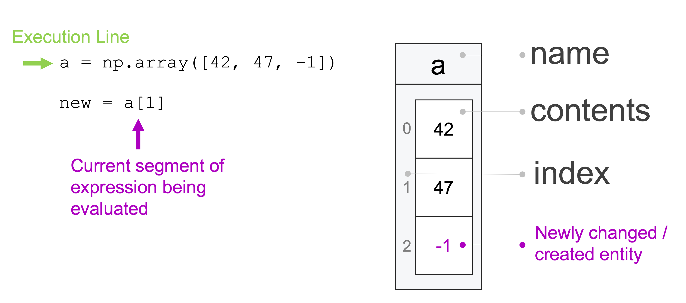

Subsetting Vectors
Contents
Subsetting Vectors#
In our last reading, we learned what vectors are, and how to do operations on entire vectors. But often times we want to work with subsets of a vector. Indeed, extracting a subset of elements from a vector is an extremely important task, not least because it generalizes nicely to datasets (which are at the heart of data science). This process — whether applied to a vector or a dataset — is often referred to as “taking a subset”, “subsetting”, or “filtering”. If there is one skill you need to master as quickly as possible, it’s this.
Subsetting can be accomplished in two ways:
By index
With Boolean (
bool) vectors
What is Subsetting?#
As you’ve probably already realized, vectors don’t just contain a jumble of data – they also have a concept of “order”. In particular, vector data is organized along a single dimension (in a line, just as data is organized in a list). So when I create a vector with 42, 47, -1, I have in mind that 42 is the first entry, 47 is the second, and -1 is the third. And we can use that concept of order to subset vectors by passing the index (order number) of an entry we want to our vector in square brackets. For example, consider the following vector:
import numpy as np
a = np.array([42, 47, -1])
a
array([42, 47, -1])
If I wanted to pull out the second entry in that vector, I could do so with array indexing using square brackets [] (remember that indexes start at 0 in Python, so the second entry is at index 1):
a[1]
47
And if I want to assign that second entry to a new variable, I can!
new = a[1]
new
47
But what, exactly, is happening when I subset? Let’s return to the idea that a variable is just a box holding some data, and walk through the following block of code:
a = np.array([42, 47, -1])
new = a[1]
And let’s do so will some illustrative figures, which will work like this:

In the first line of code, we create a new vector with three entries and assign it to the variable a. Just as in our previous reading, we can think of the variable a as a box that is holding this new vector.

In the second line, the first thing that happens is that python evaluates the expression on the right side of the assignment operator: a[1]. The use of a and square brackets indicates to python that we’re not trying to access a portion of the data stored in the box labeled a. In particular, by putting a 1 between the square brackets, we’re telling python we want the second item in the box a: the value 47.

Then when we assign that value – 47 – to new, we create a new variable, and insert our data into that box:

This variable[] notation is something we’ll use a lot with numpy, and it will always mean the same thing: we’re trying to access some data in the data stored in the box variable.
Note: we’re making one small simplification in the discussion above that, if you’ve worked with numpy a lot, you may notice. Don’t worry – we’ll address that in a later reading!
Subsetting By Index#
Simple Indexing#
There are several ways one can subset arrays, but the most basic is with simple indexing, which is where you use a single index to access a single entry, or a range (e.g., 0:3 to get the first three elements of an array), just like with lists. So in the example above, we grabbed the second element by passing in the index of the entry we wanted:
a = np.array([42, 47, -1])
a[1]
47
But if we want more than one entry, we can also subset a range of index values using the : operator:
a[0:2]
array([42, 47])
A couple of quick reminders on how the : operator works:
if you want all the entries from the first entry up to a point, you can leave the first entry blank (e.g.,
a[:2]), andif you want all the entries from a point up to the end, you can leave the last entry empty (e.g.,
a[1:]).
Fancy Indexing#
numpy arrays also support something called fancy indexing, which is where you pass a list (or another array) containing a set of indices you want to get back. With fancy indexing, index values don’t have to be consecutive or even in order! Here’s an example with a list:
a[[0, 2]]
array([42, -1])
And here’s one with an array:
zero_and_two = np.array([0, 2])
zero_and_two
array([0, 2])
a[zero_and_two]
array([42, -1])
Note that with fancy indexing, you don’t have to subset entries in order: if you pass indices out of order, you’ll get a vector with a new order!
a[[2, 0]]
array([-1, 42])
Again, this is all working the same way as our example with just one entry – Python interprets the square brackets as a request for some data in the box a, and if we pass multiple indices, it just grabs multiple items from that box.
Subsetting with Booleans#
Subsetting with Booleans is a little hard to explain, so instead let’s jump right into an example.
Suppose we have a character vector with only two elements (“dogs” and “cats”). Subsetting it to “dogs” could be done by passing a Boolean vector as follows:
fruits = np.array(["dogs", "cats"])
fruits[[True, False]]
array(['dogs'], dtype='<U4')
Within these brackets is a vector with the same number of Boolean elements as there are elements in the vector you want to subset. Elements across the two vectors are matched by order: elements that match with True are kept while elements that match with False are dropped.
Visualized with the same tools we used before, we can draw out what’s happening in this block of code:
a = np.array([42, 47, -1])
my_subset = np.array([True, False, True])
b = a[my_subset]
b
array([42, -1])
First, we create a:

Then we create my_subset:

Then the magic: Python lines up the entries in the data in the box labeled a and the data in the box labeled my_subset, and keeps any entries from a that line up with values of my_subset that are True.
Then it assigns the values in a that line up with Trues in my_subset to a new variable b:

Note: as with our previous illustrations, we are making one small simplification which, if you’ve worked with numpy a lot before, you may notice. Don’t worry—we’ll address that in a later reading!
Subsetting With Logical Operations#
This process is extremely useful when combined with a logical operation to combine multiple conditions. For example, we can use the logical “equals” (written ==) to say “be true if values are equal”, and the logical “not equals (written !=) to say “be true if values are not equal”.
WARNING: When working with numpy arrays, we can’t use the logical operations or, and, and not we use in vanilla Python. Instead, when working True and False with numpy vectors, we have to use & for “and”, | for “or”, and ~ for “not”.
To illustrate, let’s see how a logical operation can be used to filter a large vector of numbers:
# Create a numeric vector
# Reminder: if you pass a third argument to `np.arange()`,
# numpy uses that to determine the step sizes between values!
numbers = np.arange(10, 110, 10)
numbers
array([ 10, 20, 30, 40, 50, 60, 70, 80, 90, 100])
# Get small numbers:
numbers[numbers <= 50]
array([10, 20, 30, 40, 50])
And we can also combine logical conditions. When we do so, however, note that we have to wrap each test in () so numpy parses them correctly. For example:
numbers[(numbers < 30) | (numbers == 100)]
array([ 10, 20, 100])
If you don’t wrap your two tests in parenthesis, you’ll run into trouble and get this error:
numbers[numbers < 30 | numbers == 100]
---------------------------------------------------------------------------
ValueError Traceback (most recent call last)
/var/folders/tj/s8f2_ks15h315z5thvtnhz8r0000gp/T/ipykernel_13964/3746007904.py in <module>
----> 1 numbers[numbers < 30 | numbers == 100]
ValueError: The truth value of an array with more than one element is ambiguous. Use a.any() or a.all()
(Why? Well… that gets really complicated fast, but basically, numpy parses the | before anything else, and while we use | as the logical “or”, when you use it when neither array is of type bool, it actually does some weird bit-level manipulations, generating a new array of numbers instead of an array of Booleans. So… just use the parentheses. 🤷♂️)
Note that there’s nothing magic about putting these Booleans inside square brackets – Python is just evaluating the code inside the square brackets, returning an array of type bool, and then using that to subset the original array. Indeed, we can move the construction of these bool arrays outside of the square brackets if we want:
# Get only the middle set of numbers
middle_number = (30 < numbers) & (numbers < 80)
middle_number
array([False, False, False, True, True, True, True, False, False,
False])
numbers[middle_number]
array([40, 50, 60, 70])
Exercises#
Create a new vector with all the primes between 0 and 20:
2, 3, 5, 7, 11, 13, 17, 19Using the
:operator, subset all the entries from your vector greater than 10.Using a logical test (e.g.
>,<,==,!=), subset all the entries from your vector greater than 10.Using a logical test, subset all the even prime numbers from your list (recall that the
%operator returns the remainder left over after integer division – for example,7 % 3returns 1, since 3 goes into 7 two times with 1 left over).Now, using logical tests, subset all the entries that are either even or greater than 10.